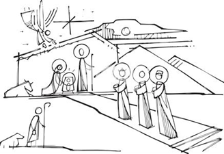

Candles to Kings
Advent
12 Days of Christmas
Ashes to Fire
Lent
Easter
The Time In-Between
Ordinary Time
- Week After Pentecost
- First Week of Ordinary Time
- Second Week of Ordinary Time
- Third Week of Ordinary Time
- Fourth Week of Ordinary Time
- Fifth Week of Ordinary Time
- Sixth Week of Ordinary Time
- Seventh Week of Ordinary Time
- Eighth Week of Ordinary Time
- Ninth Week of Ordinary Time
- Tenth Week of Ordinary Time
- Eleventh Week of Ordinary Time
- Twelfth Week of Ordinary Time
- Thirteenth Week of Ordinary Time
- Fourteenth Week of Ordinary Time
- Fifteenth Week of Ordinary Time
- Sixteenth Week of Ordinary Time
- Seventeenth Week of Ordinary Time
- Eighteenth Week of Ordinary Time
- Nineteenth Week of Ordinary Time
- Twentieth Week of Ordinary Time
- Twenty-First Week of Ordinary Time
- Twenty-Second Week of Ordinary Time
- Twenty-Third Week of Ordinary Time
- Twenty-Fourth Week of Ordinary Time
- Twenthy-Fifth Week of Ordinary Time
- Week of Thanksgiving